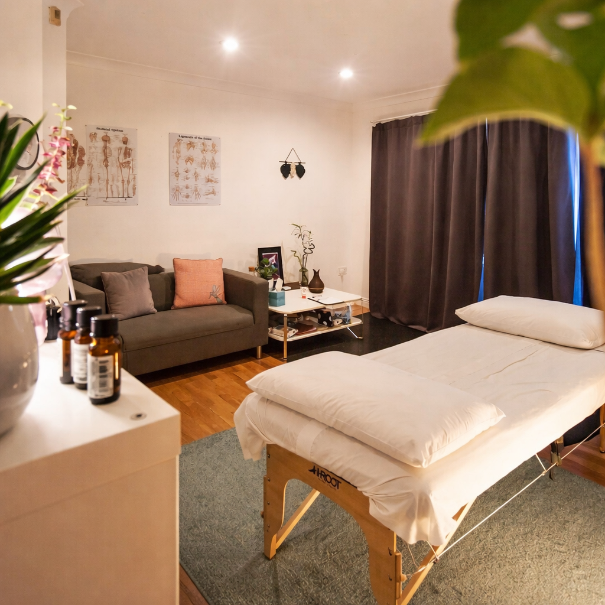
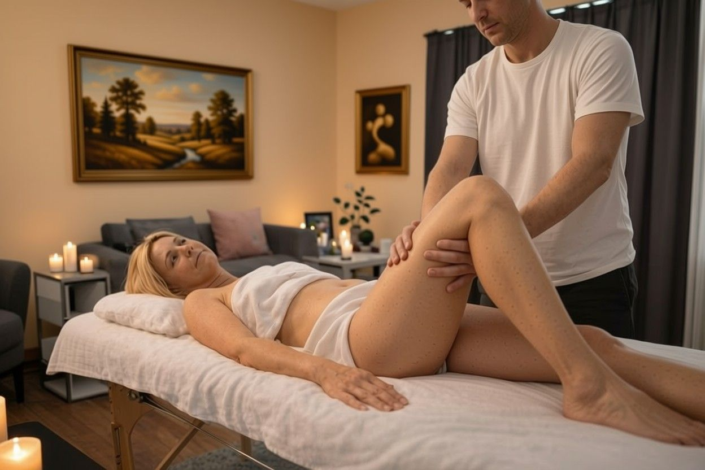

Conexión íntima femenina (masaje tántrico para mujeres), masaje sensitivo y masajes de bienestar con una atención
profesional, discreta y cuidadosamente guiada.
Atención a domicilio y, desde ahora, también en hoteles y espacios privados previamente coordinados,
con reserva anticipada en Santiago, RM, V Región y VI Región.
Solo mujeresDomicilios, Hoteles & AirbnbCita previa
Una experiencia de práctica, conexión y confianza.
Durante septiembre, Placer Privado abre cupos limitados para mujeres
adultas que deseen participar como
voluntarias en sesiones gratuitas de práctica,
mientras continúo aprendiendo y perfeccionando una nueva técnica
inspirada en el masaje Nuru.
Una experiencia diferente
¿En qué consiste?
Esta experiencia se caracteriza por un contacto corporal más
intenso y cercano que un masaje convencional.
El masajista utiliza distintas partes de su cuerpo para generar
estímulos sensoriales mediante movimientos amplios, fluidos y
continuos entre ambos cuerpos.
Para facilitar el deslizamiento se utilizarán aceites neutros y/o
vaselina para bebé. Antes de comenzar se explicará detalladamente
la dinámica de la sesión.
Preparación
Un espacio especialmente cuidado
La práctica se realizará sobre un colchón inflable que llevaré
especialmente para la sesión, evitando utilizar, invadir o
ensuciar tu cama y tus pertenencias.
Durante la experiencia estaré vestido con bóxer y polera,
trabajando desde un enfoque sensitivo y tántrico.
Consentimiento
Tú decides tus límites
Antes de comenzar acordaremos el tipo de contacto con el que te
sientes cómoda. Durante toda la sesión podrás solicitar que se
modifique un movimiento o detener la práctica.
Tu bienestar, consentimiento y tranquilidad estarán siempre por
delante de la técnica.
Condiciones de la temporada
La sesión será completamente gratuita. Solo necesitaré un poquito
de paciencia mientras perfecciono la técnica y, al finalizar,
solicitaré una opinión sincera sobre la experiencia.
Disponible exclusivamente para mujeres adultas, con reserva y
conversación previa. Cupos limitados. Atención solo a domicilio.
Toda la experiencia será privada, respetuosa y confidencial.
*Temporada de práctica vigente hasta el 30 de septiembre de 2026.
Quién Soy
Presencia, técnica y trato respetuoso
Soy masoterapeuta profesional y facilitador de masaje sensitivo para mujeres.
Trabajo desde el respeto, la discreción y la comunicación clara, cuidando tu comodidad,
tus límites y el ritmo de cada sesión.
Atención principal a domicilio, siempre con reserva previa.
Sesiones personalizadas según tu necesidad, comodidad y contexto.
Hoteles, apart hotel, oficina o Airbnb solo previa coordinación y disponibilidad.
Ambiente

Llevo camilla, toallas, aceites tibios y elementos necesarios para preparar un ambiente íntimo,
limpio y tranquilo dentro de tu propio espacio.
Todo se coordina previamente para cuidar tu comodidad, privacidad y seguridad desde el primer contacto.
Masaje tántrico y sensitivo para mujeres
Masaje Sensitivo (Tántrico) para Mujeres
Diseñado para relajar profundo, reconectar contigo y vivir una experiencia de masaje tántrico y sensitivo desde el cuidado, la calma y el respeto.
Cómo es la sesión
La sesión parte con una conversación breve para saber qué buscas, qué te gustaría explorar y cuáles son tus límites.
Luego preparo el ambiente con toallas, aceites tibios, aromas suaves, bata o uniforme y el vaiven que acompaña el ritmo de tu cuerpo.
Trabajo cuerpo completo —espalda, cuello, brazos, manos, abdomen, piernas, pantorrillas, muslos, pelvis, pies y zona lumbar— y, si corresponde y se conversa previamente,
puedo incluir otras áreas de conexión corporal (zona perineal, piso pélvico, monte de venus) desde un enfoque respetuoso, profesional y consciente.
Duración orientativa
Para efectos de coordinación, esta sesión suele durar entre 90 y 120 minutos aproximadamente.
Aun así, no trabajo desde una lógica rígida ni apurada: el ritmo real depende de tu comodidad,
de cómo responda tu cuerpo y del tipo de experiencia que estemos desarrollando.
La referencia horaria sirve para ordenar la agenda y la reserva, pero cada sesión se aborda
con criterio, presencia y flexibilidad profesional.
Lo que puedes sentir
Relajación profunda y una pausa real del ritmo mental.
Más conexión con tu respiración, tu piel y tu presencia.
Sensaciones corporales cuidadas, progresivas y sin apuro.
Un cierre suave para que puedas quedarte en calma y liviana.
Marco profesional
Todo se realiza con respeto, cuidado, higiene y consentimiento. Nada se asume; todo se conversa y se ajusta a tus límites.
Ideal si vienes de viaje
Si te hospedas en hotel, apart hotel o Airbnb en Chile, la coordinación se puede hacer de forma directa y discreta por WhatsApp.
Masajes de bienestar
Relajante cuerpo completo y descontracturante
Atención exclusiva para mujeres, con cita previa y coordinación privada.

Masaje de Cuerpo Completo
No me limito en el tiempo para este masaje, porque así me adapto a ti y nos da espacio suficiente para lograr paz,
calma y plena relajación. Ayuda a aliviar estrés, mejorar circulación, relajar cuerpo y mente y favorecer el estado de ánimo.
Enfoque en contracturas y zonas críticas: cuello, trapecios, espalda, zona lumbar, glúteos y piernas, según evaluación.
La intensidad es progresiva y siempre se ajusta a tu comodidad.
Beneficios frecuentes
Disminuye dolor muscular y rigidez.
Mejora movilidad y rango articular.
Ayuda a soltar tensión profunda capa por capa.
Mejora circulación local y recuperación.
*La intensidad se ajusta a tu tolerancia. Siempre con comunicación clara y respeto.
Por qué no trabajo con reloj encima
El cuerpo no se relaja apurado
Trabajo con una duración referencial, pero no desde una lógica rígida o apurada.
Cada sesión necesita espacio para que el cuerpo baje el ritmo, suelte tensión y pueda recibir una atención completa.
Más calma
El cuerpo se relaja mejor cuando no siente presión ni apuro.
Mejor adaptación
La presión, el ritmo y el enfoque se ajustan según cómo responde tu cuerpo.
Atención completa
No es un trámite rápido; es una sesión cuidada, personalizada y con presencia.
*La duración se conversa al agendar y siempre se mantiene dentro de un marco profesional y razonable.
Tarifas & cobertura
Valores claros y coordinación previa
Atención principal a domicilio, solo con cita previa. El valor final se confirma según comuna,
horario, distancia y modalidad de atención.
Bienestar
Cuerpo Completo · 90 min aprox.
$39.990 en RM · $44.990 en V y VI Región
Incluye Aromaterapia y Reflexología.
Descontracturante · 45 min aprox.
$34.990 · Solo RM
Incluye Aromaterapia.
Sensitivo (Tántrico) para Mujeres
Sesión profesional, personalizada y discreta
90–120 min aprox.
Desde $49.990
Incluye Aromaterapia y Reflexología. La coordinación se confirma por WhatsApp o formulario.
*Los valores pueden variar por distancia, horario, comuna o uso de espacios privados previamente coordinados.
Todo se confirma antes de la sesión.
Cobertura
Atención a domicilio con reserva previa
La atención se coordina de forma privada, principalmente a domicilio, según comuna,
horario y disponibilidad. La ubicación exacta se confirma directamente al momento de agendar.
También se pueden evaluar hoteles, apart hotel, oficinas, Airbnb o espacios privados,
siempre con coordinación anticipada y según factibilidad.
Cobertura referencial
Base principal: Santiago · Región Metropolitana · Providencia · Las Condes · Vitacura Coordinación especial: Viña del Mar · Reñaca · Concón · Valparaíso Coordinación especial: Rancagua y alrededores, según evaluación previa.
Privacidad
No existe local abierto al público. Cada reserva se coordina de manera directa,
discreta y pensada para cuidar tu comodidad, seguridad y privacidad.
*Mapa referencial: no corresponde a un local de atención.
Preguntas frecuentes
Información simple y directa
¿Atiendes a hombres?
No. La atención es exclusiva para mujeres.
¿Dónde se realiza la sesión?
En domicilio, hotel, apart hotel, oficina, Airbnb o espacio privado seleccionado, siempre según coordinación previa.
¿Atiendes reservas en hotel o Airbnb?
Sí. La atención puede coordinarse en hotel, apart hotel o Airbnb con reserva previa y discreción.
¿Cómo agendo?
Por WhatsApp o formulario. Confirmo disponibilidad, cobertura, modalidad y detalles antes de la sesión.
Higiene y límites
Trabajo con protocolos de higiene, respeto y consentimiento. Todo se conversa y se acuerda.
¿Hay local físico?
Actualmente no existe local abierto al público. La atención se realiza con reserva previa en domicilio,
hotel o espacios privados previamente coordinados.
Testimonios
Experiencias compartidas durante Junio, desde la confianza y la conexión femenina
Última actualización: 01 de Julio de 2026
Hola chikillo, perdón que recién te responda. Ese día me quedé tan relajada y me acosté temprano... dormí como una bebé. Me dio un poco de nervio al principio por ser en mi casa, pero fuiste súper correcto y eso me tranquilizó mucho. Gracias! de verdad me hizo bien.
Ese día venía muerta de cansá, con frío y la espalda tomada. Sinceramente no esperaba mucho, pero.. fue mucho más rico de lo que pensé. Me hiciste sentir mina de nuevo y que preguntaras si estaba cómoda... eso me mató. GRACIAS!!
Nolberto, te lo dije por interno; me dio vergüenza reconocerlo, pero hace tiempo no me sentía tan tranquila con mi cuerpo. Fuiste suave, cálido y rico. No sé cómo explicarlo mejor, pero me fui a dormir con la tremenda sonrisa.
Hola Nolberto! Gracias por llegar de madrugada y con ese frío horrible. Yo estaba con cero energía, la pieza helada y la cabeza llena de tonteras. De a poquito me soltaste con tus manos y me gustó que no fueras invasivo y que todo lo preguntaras. Eso me dio mucha confianza.
Te juro que pensé que me iba a morir de vergüenza todo el rato, pero no fue así. Me hablaste normal, sin hacerme sentir rara, y eso me ayudó mucho. El masaje fue exquisito, pero fue más que eso, me sentí cuidada. Eso no ha pasado con ningún otro masajista.
Hola, perdón la demora. Quedé tan relajada que después se me olvidó responder la encuesta. Me gustó mucho tu forma de trabajar, firme cuando tenía que ser y suave cuando yo ya estaba entregada a tus manos.
Ese día estaba con un terrible dolor de cabeza y el ánimo por el suelo. Me sorprendió lo ordenado que eres: la camilla, los aceites, las toallas, todo limpio. Al final me relajé tanto que quedé raja cuando te fuiste. Eres el único que me ha dejado así.
Querido Nolby, muchas gracias!! Al principio estaba nerviosa porque nunca había pedido algo así a domicilio, pero fuiste súper respetuoso y cálido. Me preguntaste de todo! me gustó mucho tu forma de ser y de tratarme.
Llegaste puntual y eso te lo agradezco. Con el frío que hacía armaste un ambiente muy rico en mi departamento. Yo venía de una semana muy pesada, de esas que una solo quiere acostarse y morir, pero te llamé y el masaje que me diste me bajó mil cambios. Quedé blandita.
Lo que más me gustó de ti fue que no se sintió mecánico como otros masajistas. Se notaba que estabas atento a cómo iba reaccionando mi cuerpo. Fue rico, tranquilo y bien llevado. Gracias por todo!!.
Te soy sincera? Me dio nervio abrir la puerta jajaja. Pero apenas te vi me tranquilicé. Muy profesional y varonil. Después del masaje quedé con una sensación bien rica, como de alivio y tranquilidad mental.
Hola Nolberto, quería agradecerte porque ese día estaba colapsada; trabajo, casa, hijos, frío, todo junto! Costó soltarme al principio, y gracias a tus maravillosas manos me fui entregando al masaje. Terminé respirando distinto. Eso fue lo más rico.
Me gustó que no prometieras nada. Fuiste claro desde el principio y eso me dio confianza. Todo fue muy natural haciéndome sentir mujer, descansada y regaloneada, que falta que hace a veces.
Ay Nolberto, ese masaje me dejó tontita jajaja. Estaba más helá que pata de pingüino y terminé calentita, tranquila y con el cuerpo liviano gracias a tus manos. Me gustó mucho tu tacto y discreción, sobre todo porque una igual tiene desconfianza de contar o hacer cosas... XD.
Gracias por la paciencia, porque te pregunté mil cosas antes de agendar pero, me respondiste todo súper bien. El masaje fue exquisito, (sin prisa, pero sin pausa) Me sentí segura todo el tiempo y eso para mí vale mucho.
Me hiciste reír tanto cuando me dijiste que respirara porque estaba tiesa como tabla... era verdad jjhasjas. Me encantó que tuvieras esa fuerza para levantarme y mucha delicadeza para acomodarme y después mi cuerpo se fue soltando solito. Quedé como nueva.
Ese día no quería hablar, estaba cansada y media bajoneada (lo respetaste y se agradece). Tus manos grandes, calientes, el aceite tibio y dejaste que el masaje hiciera lo suyo.
Nolberto, no sé si decirlo así pero me sentí bonita otra vez. No por fuera, sino porque pude volver a sentir mi cuerpo sin culpa. Fue una experiencia íntima y delicada. Me quedé con ganas de más. Te llamaré a fin de mes
Agenda
Solicitar reserva
Puedes coordinar tu sesión por formulario o por WhatsApp. La respuesta es privada,
clara y según disponibilidad. Atención exclusiva para mujeres.
Contacto directo
Coordinación privada y discreta
Si prefieres una coordinación más directa, puedes escribir por WhatsApp o correo.
La atención se organiza de manera reservada, clara y según disponibilidad.